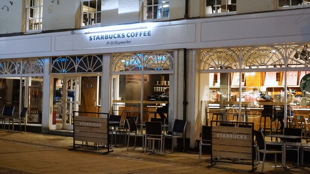
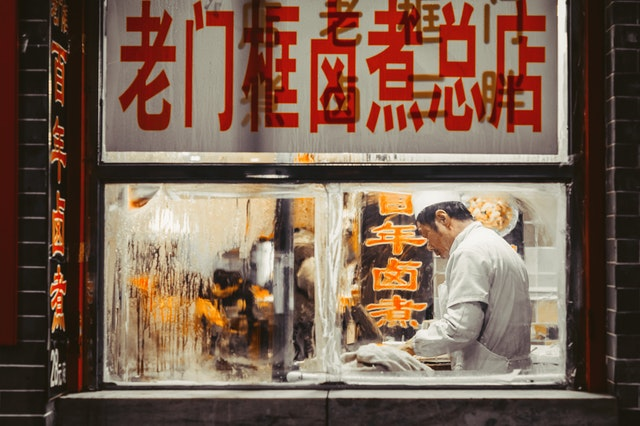

Buddhism pilgrimage
Route: Holy Land Temple -> Holy Land Palace -> Chan Culture Park
Travel time
5-6 hours walking or 3.5-4.5 hours driving
Our city has world's biggest airport! We strongly recommend you to come here by air!
Car is also a nice optional! Driving can save energy when traveling through the mountains.
5-6 hours walking or 3.5-4.5 hours driving
It is recommended to walk for leisure, 5-6 hours
5-6 hours walking; 3.5-4.5 hours driving
Starbucks is the name of a chain coffee company in the United States. It was established in 1971 and is the world's largest coffee chain. Its headquarters is located in Seattle, Washington. Starbucks' retail products include more than 30 world-class coffee beans, hand-made espresso and a variety of coffee hot and cold beverages, fresh and delicious all kinds of pastries, as well as a wide range of coffee machines, coffee cups and other commodities.
It integrates the essence of temple vegetarian food, royal vegetarian food, and folk vegetarian food. It
uses wild mushrooms, soy products, konjac products and Hainan local seasonal vegetables and fruits as
raw materials. Nutrition requirement, it has the effect of beautifying and delaying aging.

Salted duck is the only low-temperature livestock and poultry product in Chinese history, which is completely different from traditional cured meat products. The salted water duck is salty, sweet and fragrant, with a smooth and tender taste. The flesh is white, oily and shiny, the skin is fat and bones are fragrant, fresh and tender, salty and delicious. The brine duck is cooked at low temperature, and after about an hour of cooking, the tenderness of the brine duck reaches a certain level.
